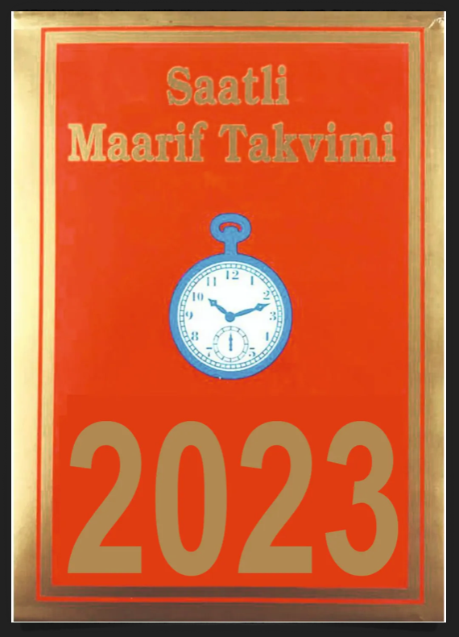
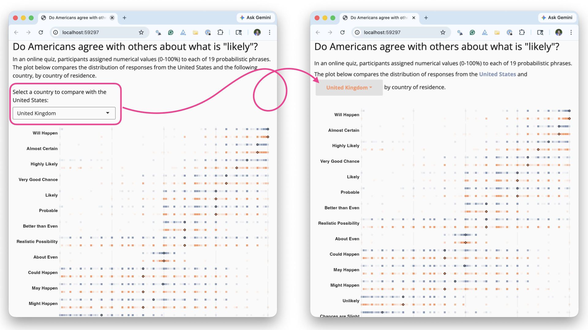
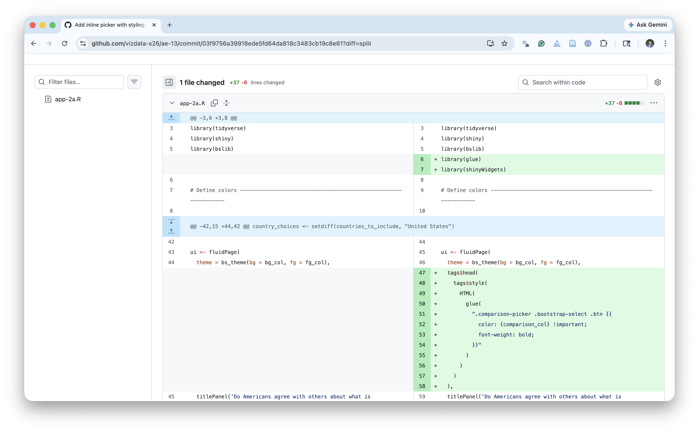
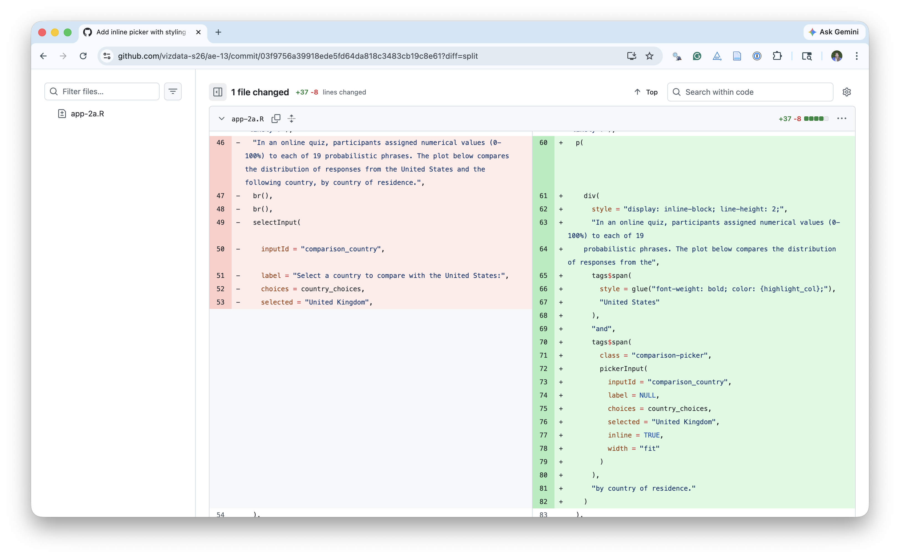

# load packages
library(tidyverse)
library(ggtext)
library(glue)
# set theme for ggplot2
ggplot2::theme_set(ggplot2::theme_minimal(base_size = 16))
# set figure parameters for knitr
knitr::opts_chunk$set(
fig.width = 7, # 7" width
fig.asp = 0.618, # the golden ratio
fig.retina = 3, # dpi multiplier for displaying HTML output on retina
fig.align = "center", # center align figures
dpi = 300 # higher dpi, sharper image
)Interactive visualizations and reporting with Shiny II
Lecture 19
Dr. Mine Çetinkaya-Rundel
Duke University
STA 313 - Spring 2026
Warm up
Announcements
Mini-project 2 posted, due Monday, April 6 at 5 pm
Project 2 proposals in lab tomorrow
If we’re missing your team name at https://github.com/vizdata-s26/teams/blob/main/project-2-teams.csv please email Leah ASAP, otherwise I’ll pick a team name for you!
Missing responses from 10 students for Project 2 presentations, please fill out the survey on Canvas ASAP. You got an email from me if you’re on that list!
Setup
Project 2
Project 2 - potential directions
- Present and visualize a technical topic in statistics or mathematics, e.g., Gradient descent, quadrature, autoregressive (AR) models, etc.
- Build a Shiny app that that has an Instagram-like user interface for applying filters, except not filters but themes for ggplots.
- Create an R package that provides functionality for a set of ggplot2 themes and/or color palettes.1
- Build a generative art system.
- Do a deep dive into accessibility for data visualization and build a lesson plan for creating accessible visualizations with ggplot2, Quarto, and generally within the R ecosystem.
- Create an interactive and/or animated spatio-temporal visualization on a topic of interest to you, e.g., redistricting, vaccination, voter suppression, etc.
- Recreate art pieces with ggplot2.
- Make a data visualization telling a story and convert it to an illustration, presenting both the computational and artistic piece side by side.
- Build a dashboard with Quarto and R or Python.
- Create a package that makes it easy to create data visualizations in a particular style.
- Build a website that teaches a data visualization topic of your choice, along with code examples and assessment items.
- Visualize a (non-TidyTuesday) dataset of interest to you (similar to your first project).
Project 2 - all the details
Tip
Brainstorm a bunch of ideas and discard them until you settle on a topic that everyone in the team is happy with and feels like a good choice for showcasing what you’ve learned in the class and how you can use that to learn something new and implement for your project.
Project 2 - inspiration

From last time…
Where we left off

What changed I

What changed II

Livecoding
Go to the ae-13 project and pull. Then, code along in app-2a.R.
Highlights:
- Data pre-processing outside of the app
- Dynamic UI generation
- Tabsets
Livecoding
Go to the ae-13 project and code along in app-3.R.
Highlights:
- Linked brushing
Reference
The code for the app can be found here.
# Load packages ---------------------------------------------------------------
library(tidyverse)
library(shiny)
library(shinyWidgets)
library(bslib)
library(DT)
library(glue)
# Define colours --------------------------------------------------------------
bg_col <- "#FAFAFA"
fg_col <- "#000000"
highlight_col <- "#7f93b3"
comparison_col <- "#FA9161"
# Load data -------------------------------------------------------------------
absolute_judgements <- read_csv(
"data/absolute-judgements-subset.csv"
)
respondent_metadata <- read_csv(
"data/respondent-metadata-subset.csv"
)
# Prep data -------------------------------------------------------------------
countries_to_include <- respondent_metadata |>
distinct(country_of_residence) |>
pull()
# Set country choices ---------------------------------------------------------
country_choices <- setdiff(countries_to_include, "United States")
# UI --------------------------------------------------------------------------
ui <- fluidPage(
theme = bs_theme(bg = bg_col, fg = "#000000"),
tags$head(
tags$style(
HTML(
glue(
".comparison-picker .bootstrap-select .btn {{
color: {comparison_col} !important;
font-weight: bold;
}}"
)
)
)
),
titlePanel('Do Americans agree with others about what is "likely"?'),
p(
div(
style = "display: inline-block; line-height: 2;",
"In an online quiz, participants assigned numerical values (0-100%) to each of 19
probabilistic phrases. The plot below compares the distribution of responses from the",
tags$span(
style = glue("font-weight: bold; color: {highlight_col};"),
"United States"
),
"and",
tags$span(
class = "comparison-picker",
pickerInput(
inputId = "comparison_country",
label = NULL,
choices = country_choices,
selected = "United Kingdom",
inline = TRUE,
width = "fit"
)
),
"by country of residence."
)
),
tabsetPanel(
tabPanel(
"Plot",
plotOutput("prob_plot", height = "900px", brush = "brushed_points"),
br(),
uiOutput("note_text"),
br(),
br(),
HTML(
"<b>Source</b>: Kucharski AJ (2026) CAPphrase: Comparative and Absolute Probability ",
"phrase dataset. DOI: <a href='https://doi.org/10.5281/zenodo.18750055'>10.5281/zenodo.18750055</a>."
)
),
tabPanel(
"Data",
br(),
DTOutput("data_table")
)
)
)
# Server ----------------------------------------------------------------------
server <- function(input, output, session) {
output$note_text <- renderUI({
HTML(
glue(
"<b>Note</b>: Responses from participants outside of the United States and {input$comparison_country}, and from those who did not provide their country of residence, are excluded. Terms are ranked by overall median probability."
)
)
})
plot_data <- reactive({
countries <- c("United States", input$comparison_country)
term_ranks <- absolute_judgements |>
left_join(respondent_metadata, by = "response_id") |>
group_by(term) |>
summarize(med_prob = median(probability)) |>
arrange(desc(med_prob))
absolute_judgements |>
mutate(term = factor(term, levels = term_ranks$term)) |>
left_join(respondent_metadata, by = "response_id") |>
filter(country_of_residence %in% countries) |>
drop_na(country_of_residence) |>
mutate(y = if_else(country_of_residence == "United States", 0.5, -0.5))
})
summary_data <- reactive({
plot_data() |>
group_by(country_of_residence, term) |>
summarize(med_prob = median(probability), .groups = "drop") |>
mutate(y = if_else(country_of_residence == "United States", 0.5, -0.5))
})
output$data_table <- DT::renderDT({
brushedPoints(
plot_data() |> select(-c(timestamp)),
input$brushed_points,
panelvar1 = "term"
)
})
output$prob_plot <- renderPlot({
comp <- input$comparison_country
ggplot() +
geom_point(
data = plot_data(),
mapping = aes(
x = probability,
y = y,
color = country_of_residence
),
alpha = 0.1,
shape = "square",
size = 2
) +
geom_point(
data = summary_data(),
mapping = aes(
x = med_prob,
y = y,
fill = country_of_residence,
shape = country_of_residence
),
size = 2,
alpha = 1
) +
facet_wrap(~term, ncol = 1, strip.position = "left") +
scale_color_manual(
values = setNames(
c(comparison_col, highlight_col),
c(comp, "United States")
)
) +
scale_fill_manual(
values = setNames(
c(comparison_col, highlight_col),
c(comp, "United States")
)
) +
scale_shape_manual(
values = setNames(
c("circle filled", "diamond filled"),
c("United States", comp)
)
) +
scale_x_continuous(expand = expansion(0, 0)) +
scale_y_continuous(limits = c(-0.75, 0.75)) +
labs(
x = "Probability (%)",
y = NULL,
color = NULL,
fill = NULL,
shape = NULL,
) +
coord_cartesian(clip = "off") +
theme_minimal(base_size = 16) +
theme(
legend.position = "none",
plot.margin = margin(20, 15, 5, 5, "pt"),
plot.background = element_rect(fill = bg_col),
panel.background = element_rect(fill = bg_col, colour = bg_col),
strip.text.y.left = element_text(
face = "bold",
angle = 0,
hjust = 1
),
axis.text.y = element_blank(),
axis.title.x = element_text(hjust = 1),
panel.grid.major.y = element_blank(),
panel.grid.minor.y = element_blank(),
panel.grid.minor = element_blank(),
)
})
}
shinyApp(ui, server)Quarto dashboards
A new output format for easily creating
dashboards from .qmd files
.qmd ➝ Dashboard
Dashboard Components
Navigation Bar and Pages — Icon, title, and author along with links to sub-pages (if more than one page is defined).
Sidebars, Rows & Columns, and Tabsets — Rows and columns using markdown heading (with optional attributes to control height, width, etc.). Sidebars for interactive inputs. Tabsets to further divide content.
Cards (Plots, Tables, Value Boxes, Content) — Cards are containers for cell outputs and free form markdown text. The content of cards typically maps to cells in your notebook or source document.
Navigation Bar and Pages

Sidebars: Page Level
Sidebars: Global

Layout: Rows
Layout: Columns

Tabset

Plots
Each code chunk makes a card, and can take a title

Tables
Each code chunk makes a card, doesn’t have to have a title

Other features
Text content
Value boxes
Expanding cards
Dashboard deployment
Dashboards are typically just static HTML pages so can be deployed to any web server or web host!
Interactive Dashboards
https://quarto.org/docs/dashboards/interactivity/shiny-r
For interactive exploration, some dashboards can benefit from a live R backend
To do this with Quarto Dashboards, add interactive Shiny components
Deploy with or without a server!